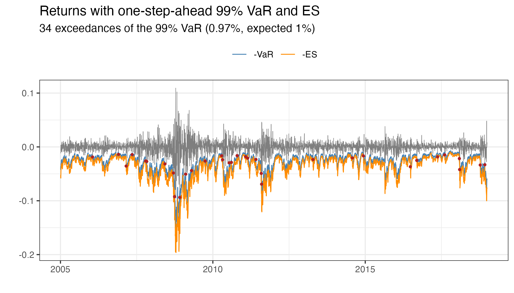

stochvolTMB is a package for fitting stochastic volatility (SV) models to time series data. It is inspired by the package stochvol, but parameter estimates are obtained through optimization and not MCMC, leading to significant speed up. It is built on Template Model Builder for fast and efficient estimation. The latent volatility is integrated out of the likelihood using the Laplace approximation and automatic differentiation (AD) is used for accurate evaluation of derivatives.
Seven models for the observational error are implemented. Select a model with the model argument of estimate_parameters:
-
Gaussian (
"gaussian") - The classic SV model with Gaussian noise -
t (
"t") - t-distributed noise for heavy tail returns -
Leverage (
"leverage") - Extending the Gaussian model by allowing observed returns to be correlated with the latent volatility -
Skew-Gaussian (
"skew_gaussian") - Skew-Gaussian distributed noise for asymmetric returns -
Skew-Gaussian with leverage (
"skew_gaussian_leverage") - Combines asymmetric returns with the leverage effect -
Skew-t (
"skew_t") - Skew t distributed noise with separate degrees of freedom for the left and the right tail -
Skew-t with leverage (
"skew_t_leverage") - Combines heavy and asymmetric tails with the leverage effect
Installation
To install the current stable release from CRAN, use
install.packages("stochvolTMB")To install the current development version, use
# install.packages("remotes")
remotes::install_github("JensWahl/stochvolTMB")If you would also like to build and view the vignette locally, use
remotes::install_github("JensWahl/stochvolTMB", dependencies = TRUE, build_vignettes = TRUE)Example
The main function for estimating parameters is estimate_parameters:
library(stochvolTMB, warn.conflicts = FALSE)
# load s&p500 data from 2005 to 2018
data(spy)
# fit all seven models and rank them by AIC
comparison <- compare_models(spy$log_return)
comparison[, .(model, n_par, log_lik, aic, bic, delta_aic, converged)]
#> model n_par log_lik aic bic delta_aic
#> <char> <int> <num> <num> <num> <num>
#> 1: skew_t_leverage 6 11866.69 -23721.38 -23684.38 0.00000
#> 2: skew_gaussian_leverage 5 11854.30 -23698.59 -23667.76 22.78558
#> 3: leverage 4 11808.43 -23608.85 -23584.18 112.52674
#> 4: skew_t 5 11734.86 -23459.72 -23428.89 261.65871
#> 5: t 4 11729.85 -23451.69 -23427.02 269.68665
#> 6: skew_gaussian 4 11724.36 -23440.72 -23416.06 280.65545
#> 7: gaussian 3 11718.29 -23430.57 -23412.07 290.80456
#> converged
#> <lgcl>
#> 1: TRUE
#> 2: TRUE
#> 3: TRUE
#> 4: TRUE
#> 5: TRUE
#> 6: TRUE
#> 7: TRUE
# the fitted models are stored in the attribute "fits"
fits <- attr(comparison, "fits")
leverage <- fits$leverage
skew_gaussian_leverage <- fits$skew_gaussian_leverage
skew_t_leverage <- fits$skew_t_leverage
# parameter estimates on their natural scale, with standard errors
coef(skew_t_leverage)
#> sigma_y sigma_h phi df_left df_right rho
#> 0.007960947 0.266050220 0.975054402 8.633937770 15.174233987 -0.870746614
sqrt(diag(vcov(skew_t_leverage)))
#> sigma_y sigma_h phi df_left df_right rho
#> 0.0003943647 0.0179234178 0.0035924730 1.5493996123 3.7766666002 0.0201355154
# the skew models report the skewness and the shape parameter alpha
summary(skew_gaussian_leverage, report = "transformed")
#> parameter estimate std_error z_value p_value type
#> <char> <num> <num> <num> <num> <char>
#> 1: sigma_y 0.007951179 0.0003805306 20.89498 5.947836e-97 transformed
#> 2: sigma_h 0.276811723 0.0178393401 15.51693 2.665157e-54 transformed
#> 3: phi 0.971016373 0.0038900969 249.61239 0.000000e+00 transformed
#> 4: skewness -0.404691012 0.0391237331 -10.34388 4.461243e-25 transformed
#> 5: alpha -1.829728812 0.1306960189 -13.99988 1.561303e-44 transformed
#> 6: rho -0.837199927 0.0226024967 -37.04015 2.587145e-300 transformed
# get parameter estimates with standard error
estimates <- summary(leverage)
head(estimates, 10)
#> parameter estimate std_error z_value p_value type
#> <char> <num> <num> <num> <num> <char>
#> 1: sigma_y 0.008338412 0.0004163314 20.0283029 3.121144e-89 transformed
#> 2: sigma_h 0.273443559 0.0182641070 14.9716359 1.125191e-50 transformed
#> 3: phi 0.967721215 0.0043681868 221.5384240 0.000000e+00 transformed
#> 4: rho -0.748695259 0.0322487815 -23.2162340 3.121690e-119 transformed
#> 5: log_sigma_y -4.786882463 0.0499293427 -95.8731319 0.000000e+00 fixed
#> 6: log_sigma_h -1.296660043 0.0667929683 -19.4131220 5.978190e-84 fixed
#> 7: logit_phi 4.110221202 0.1375467861 29.8823500 3.337032e-196 fixed
#> 8: logit_rho -1.939958912 0.1467670249 -13.2179481 6.912403e-40 fixed
#> 9: h -0.536254072 0.5182192669 -1.0348015 3.007616e-01 random
#> 10: h -0.207811236 0.4245258952 -0.4895137 6.244781e-01 random
# plot estimated volatility with 95 % confidence interval
plot(leverage, include_ci = TRUE, dates = spy$date)
# plot the returns with the 95 % interval of the fitted model
plot_returns(skew_t_leverage, dates = spy$date)
Given the estimated parameters we can simulate future volatility and log-returns using predict.
set.seed(123)
# simulate future prices with or without parameter uncertainty
pred = predict(leverage, steps = 10)
# Calculate the mean, 2.5% and 97.5% quantiles from the simulations
pred_summary = summary(pred, quantiles = c(0.025, 0.975), predict_mean = TRUE)
print(pred_summary)
#> $y
#> time quantile_0.025 quantile_0.975 mean
#> <int> <num> <num> <num>
#> 1: 1 -0.03511786 0.03422990 8.830170e-05
#> 2: 2 -0.03425975 0.03613982 2.378182e-04
#> 3: 3 -0.03502339 0.03562585 2.814776e-04
#> 4: 4 -0.03375335 0.03443438 1.377418e-05
#> 5: 5 -0.03415388 0.03483894 5.813500e-05
#> 6: 6 -0.03533800 0.03329416 -2.487619e-04
#> 7: 7 -0.03518805 0.03589505 9.441464e-05
#> 8: 8 -0.03376882 0.03399288 1.222454e-04
#> 9: 9 -0.03417209 0.03288237 -2.140804e-04
#> 10: 10 -0.03356554 0.03423250 -1.336477e-04
#>
#> $h
#> time quantile_0.025 quantile_0.975 mean
#> <int> <num> <num> <num>
#> 1: 1 0.33848340 2.374523 1.355692
#> 2: 2 0.19656034 2.420622 1.311919
#> 3: 3 0.06080838 2.453701 1.264816
#> 4: 4 -0.05849895 2.484628 1.219738
#> 5: 5 -0.18187744 2.521410 1.181368
#> 6: 6 -0.25406057 2.519600 1.147483
#> 7: 7 -0.34127330 2.554394 1.114651
#> 8: 8 -0.49256833 2.592125 1.078571
#> 9: 9 -0.52840260 2.598494 1.046030
#> 10: 10 -0.58870927 2.616284 1.015518
#>
#> $h_exp
#> time quantile_0.025 quantile_0.975 mean
#> <int> <num> <num> <num>
#> 1: 1 0.009811451 0.02735105 0.01699095
#> 2: 2 0.009155662 0.02822923 0.01676668
#> 3: 3 0.008514904 0.02876314 0.01646270
#> 4: 4 0.008024596 0.02918867 0.01622671
#> 5: 5 0.007544592 0.02960823 0.01595737
#> 6: 6 0.007255252 0.02989300 0.01577306
#> 7: 7 0.006955999 0.03031952 0.01559668
#> 8: 8 0.006545648 0.03043764 0.01543440
#> 9: 9 0.006397995 0.03077176 0.01522605
#> 10: 10 0.006172166 0.03109516 0.01507353
# plot predicted volatility with 0.025 and 0.975 quantiles
plot(leverage, include_ci = TRUE, forecast = 50, dates = spy$d) +
ggplot2::xlim(c(spy[.N, date] - 150, spy[.N, date] + 50))
#> Warning: Removed 3419 rows containing missing values or values outside the scale range
#> (`geom_line()`).
#> Removed 3419 rows containing missing values or values outside the scale range
#> (`geom_line()`).
#> Removed 3419 rows containing missing values or values outside the scale range
#> (`geom_line()`).
#> Warning: Removed 3419 rows containing missing values or values outside the scale range
#> (`geom_ribbon()`).
To check the fit with one-step-ahead residuals, use plot_diagnostics. It shows a Q-Q plot and the autocorrelation of the residuals and of the squared residuals:
plot_diagnostics(skew_t_leverage)
Value at Risk and Expected Shortfall
var_es calculates the one-day Value at Risk (VaR) and Expected Shortfall (ES) from the exact one-step-ahead predictive distribution, for every day in the data and for the next day. backtest_var tests if the VaR exceedances have the expected frequency (Kupiec) and are independent (Christoffersen). For the S&P 500 data, the skew-t model with leverage passes both tests at the 95% and 99% levels:
risk <- var_es(skew_t_leverage, level = c(0.95, 0.99))
# VaR and ES for the next day
risk[is.na(y)]
#> time level y var es exceedance
#> <int> <num> <num> <num> <num> <lgcl>
#> 1: 3523 0.95 NA 0.03181108 0.04560319 NA
#> 2: 3523 0.99 NA 0.05359064 0.06893175 NA
backtest_var(risk)
#> level n expected observed rate lr_uc p_uc lr_ind
#> <num> <int> <num> <int> <num> <num> <num> <num>
#> 1: 0.95 3522 176.10 191 0.054230551 1.29303116 0.2554901 1.3599331
#> 2: 0.99 3522 35.22 34 0.009653606 0.04318348 0.8353802 0.9112984
#> p_ind lr_cc p_cc es_ratio
#> <num> <num> <num> <num>
#> 1: 0.2435491 2.6529642 0.2654093 0.9890637
#> 2: 0.3397702 0.9544819 0.6204930 1.0067746
plot_var(risk, level = 0.99, dates = spy$date)
For more than one day, forecast_var_es simulates future returns. The cumulative columns give, for example, the 10-day VaR and ES:
set.seed(123)
forecast_var_es(skew_t_leverage, steps = 10, level = 0.99)[c(1, 5, 10)]
#> step level var es var_cumulative es_cumulative
#> <int> <num> <num> <num> <num> <num>
#> 1: 1 0.99 0.05353692 0.06848498 0.05353692 0.06848498
#> 2: 5 0.99 0.05436722 0.07291772 0.12603045 0.16215942
#> 3: 10 0.99 0.05363064 0.07430768 0.18499850 0.24817920Shiny app
By running run_shiny_demo() you start a shiny application where you can visually inspect the effect of choosing different models and parameter configurations